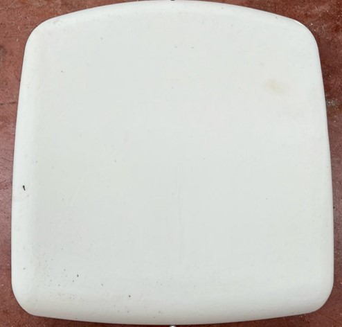

| TARİH | 18.11.2024 | Ürün Görseli |  |
|---|---|---|---|
| ÜRÜN ADI | SPACE OTURAK SÜNGERİ | ||
| ÜRÜN KODU | 45.03.00.61500.01 | ||
| Makine Adı | KRAUSS MAFFEİ ROBOT | ||
|---|---|---|---|
| Kalıp Kodu | SR164 | ||
| Kalıp Türü | ALÜMİNYUM | ||
| Sünger hammadde bilgileri | 5165/149 POLYOL - 135/144 ISO | ||
| Kalıp ayırıcı bilgileri | SINTALEASE 2171 SÜNGER AYIRICI | ||
| Ürün Ağırlığı (gr) | 1065 | ||
| Hammadde Akış oranı (gr./sn.) | Poliyol | 185.19 | Isocyanat | 114.81 | Tolerans | ±%5 |
|---|---|---|---|---|---|---|
| Toplam akış oranı (gr/sn) | 300 | Tolerans | ±%5 | |||
| Karışım oranı ISO / POLYOL (%) | 62 | Tolerans | ±%10 | |||
| Toplam Ağırlık (gr.) | 1100 | Tolerans | ±50 | |||
| Isıtıcı Sıcaklığı (°C) | 75 | Tolerans | ±15 | |||
| Kalıp Sıcaklığı (°C) | 50 | Tolerans | ±15 | |||
| Komponent Basıncı (bar) | ||||||
| Tank Komponent Sıcaklığı (°C) | ||||||